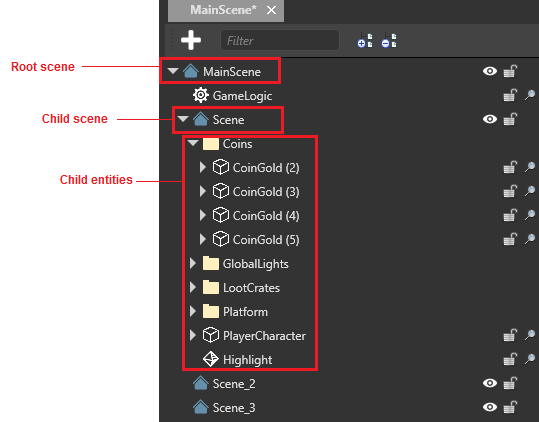
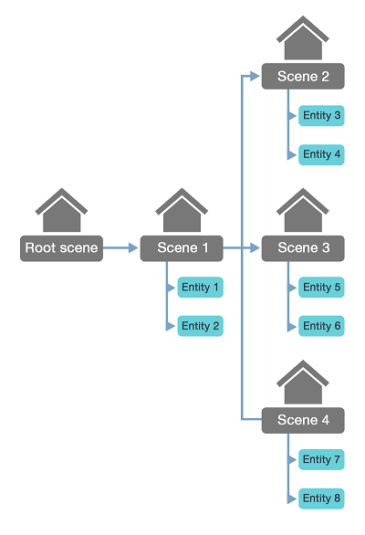
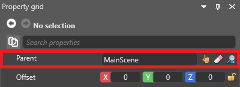
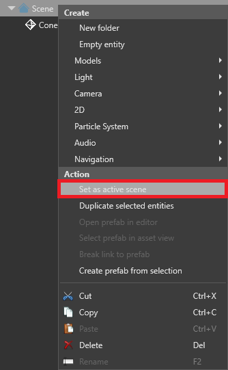
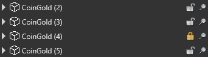
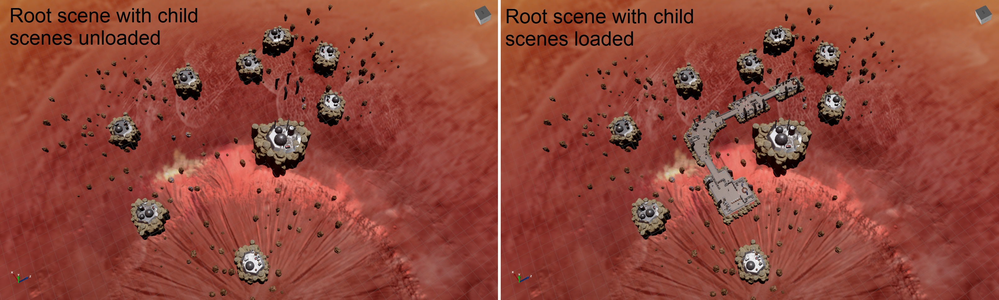
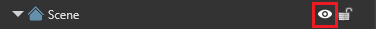
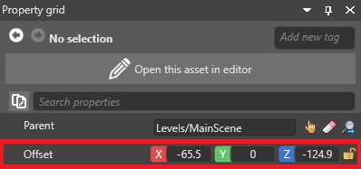

Manage scenes
Warning
Приносим свои извинения за неудобства. Для этой страницы нет перевода на русский язык. Она будет отображаться на английском языке.
Beginner Programmer Designer
Scenes and entities are arranged in a hierarchy, with the root scene at the top. This hierarchy is displayed in the Entity Tree in the Scene Editor on the left.

The root scene contains all the scenes and entities in your game. It should contain common entities that the other scenes and entities use, such as game logic scripts.

Scenes are kept in different folders. This means that different people can work on them without overwriting each other's work.
Note
When scenes load at runtime, their child scenes aren't automatically loaded too. You have to load child scenes in code. For more information, see Load scenes.
Set parent and child scenes
The relationship between parent and child scenes is set on the child, not the parent. In other words, child scenes know about their parent scenes, but parent scenes don't know about their child scenes.
There are several ways to make a scene a child of another scene:
In the Scene Editor Entity Tree (left by default), drag the scene onto the scene you want to make its parent.
Drag the scene from the Asset View (bottom by default) onto the scene you want to make its parent in the Entity Tree.
In the scene Property Grid (on the right by default), next to Parent, specify the scene you want to be the scene's parent.

Set the default scene
The default scene is the scene Stride loads at runtime. You can set this in the Game Settings asset.
In the Solution Explorer (the bottom-left pane by default), select the Assets folder.

In the Asset View (the bottom pane by default), select the GameSettings asset.

In the Property Grid (the right-hand pane by default), next to Default Scene, click
 (Select an asset).
(Select an asset).
The Select an asset window opens.
Select the default scene and click OK.
Stride loads this scene at runtime.
For more information about the Game Settings asset, see Game Settings.
Set the active scene
The active scene is the scene entities are added to when you drop them in the Scene Editor. Game Studio adds the entities as children to the active scene.
To set the active scene, Entity Tree (left by default), right-click the scene and select active scene.

The active scene has no effect on runtime.
Lock scenes and entities
You can lock scenes and entities so they can't be selected in the main window. This is useful when you have lots of things in your scene. You can still select scenes and entities in the Entity Tree.
To lock or unlock a scene or entity, in the Entity Tree, click the padlock icon.

Tip
When you lock a scene, all its child scenes and entities are locked too. To lock an entity along with its child entities, hold Ctrl and click the padlock icon.
Locked items have a gold locked padlock icon in the Entity Tree.

Load and unload scenes in the Scene Editor
You can load and unload scenes (with all their child scenes and entities) in the Scene Editor. Unloading scenes in the editor is useful if, for example, you want to remove clutter from your editing view, or improve editor performance.
The screenshots below show a root scene with child scenes loaded and unloaded. The root scene contains entities that all the scenes use, including the skybox, scripts, asteroids, and player character. The child scenes are sections of level.

To load or unload a scene, in the Scene Editor, in the Entity Tree on the left, next to the scene you want to load or unload, click the eye icon.

Move a scene
As scenes aren't entities, they don't have transform components. However, you can move a scene using its offset property.

To move a scene at runtime, use:
myScene.Offset = new Vector3(x, y, z);
Replace myScene with the name of the scene, and x,y,z with the XYZ coordinates you want to move the scene to.